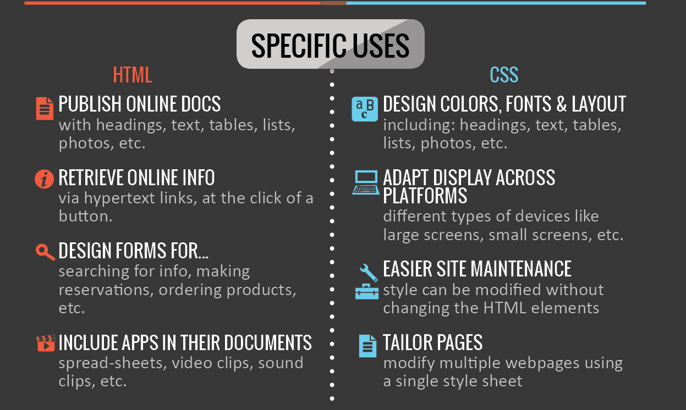
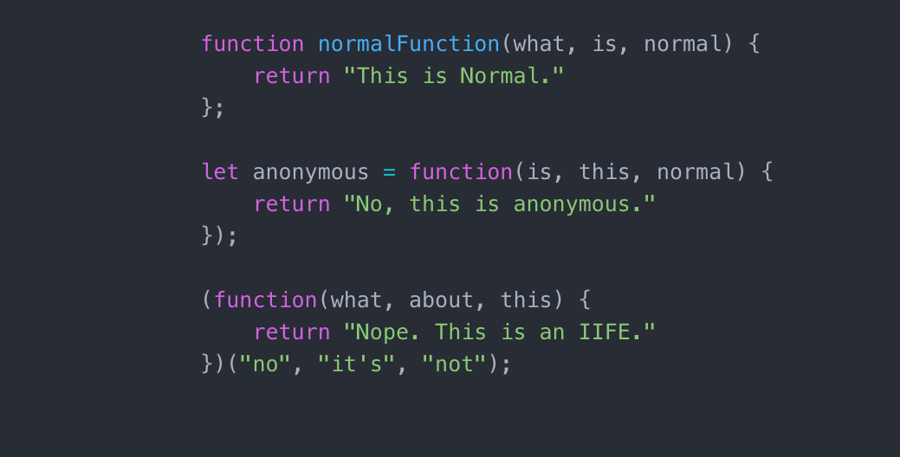

JavaScript BASICS
Sprint 3 Technical Blog
26 February 2020

In this blog entry we will try to simplify things as if talking to a non-technical person so that they can understand the basics of JavaSript, and how it relate to HTML and CSS.
Also we will describe what is Document Object Model or DOM and will site some examples.
"Analogy to describe the differences between HTML and CSS"
Before we can build a website we must learn the difference between these two terms that goes hand-in-hand. HTML (Hypertext Markup Language)is used to create the actual content of the page, such as written text,
and CSS (Cascade Styling Sheets) is responsible for the design or style of the website, including the layout, visual effects and background colour.
Even though they do have their key differences both are needed to complete a webpage interface.
One way we can let our non-technical folks to understand the difference between the two is that we can compare building a website to building a house.
If you think of it a house is made up of frames with different rooms and each rooms have different purpose that contains appliances.
Like with webpages it has a header, body, footer. HTML is the main frame of the house, which organizes and presents elements of a webpage in a hierarchy manner.
CSS on the other hand is like the interior design of each room, it will tell us what colours, size, position, shape of elements to put in.

"Explain Control Flow and Loops using an example process from everyday life"
Control Flow is the order in which JavaScript codes were executed. The code is run in order from the first line to the last line in file,
unless the computer runs across structure that change the flow. We can compare the control flow to our daily tasks or to-do list like eat breakfast,
go to the gym, wash up, go to work, meet up with a colleague etc. While on the other hand a Loops are basically much like a repeated code over and over until a certain condition was given.
And this one can be describe as doing the exact normal routine that you do everyday, unless there's an unexpected event that can stop us from doing the usual.
"Document Object Model, and an example of how you might interact with it"
A Document Object Model or otherwise known as DOM it is a standard for accessing and updating the webpage, it usually lies behind the scene and have a hierarchal structure.
It is like a family tree with one single origin. In some resources it is separated into 3 different parts ( HTML DOM, XML DOM and Core DOM), as for this discussion we can focus on HTML Dom.
HTML is a standard object model and programming interface for HTML. We can easily manipulate the some HTML elements with it as well like tags, classes, IDs, attributes, etc.

"Difference between accessing data from Arrays and Objects
In learning JavaScript you need to know how to access data from arrays and objects. Arrays are used to store multiple values in a single variable. It has a special variable which can hold more than one value at a time.
If you have to compute one million data points from a sensor, they should go in an array. Right there and then we can iterate over the array and do some computation on each element, uniformly the same computation for each one.
However in Object represents one whole thing which has some number of specific properties that are represented by the members of the object. Like a persons first name, last name, phone number, address and email address.
We can also access properties within an object by using dot notation or bracket {} notation.

"What Functions are and why they are useful"
Functions are codes inside of a programs that can be stored and be reused while keeping things organised to produce different results. It also help group the variables together.
JavaScript function is defined with the keyword function, followed by a name, followed by parentheses (). The parentheses may include parameter names separated by a commas:. The code to be executed, by the function, is placed inside curly brackets {}.
